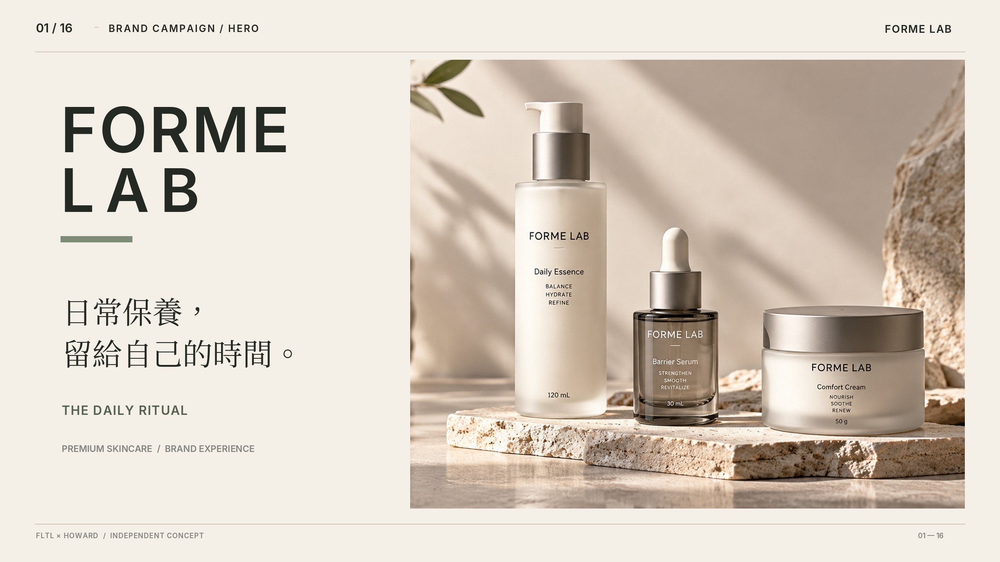
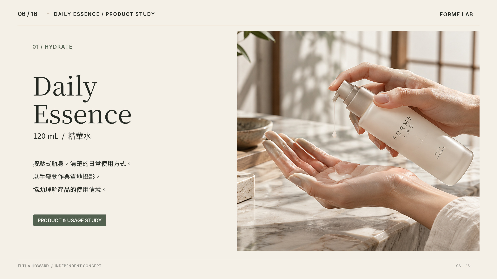

07 / ART DIRECTION · BRAND · DIGITAL
FORME
LAB
日常保養，
留給自己的時間。
A moment for
your daily ritual.
針對高級日常保養品牌的自主概念設計，包含品牌識別、產品包裝、編輯攝影及數位使用體驗。
Independent design concept for premium daily skincare, spanning identity, packaging, editorial imagery, and responsive digital experiences.
探索產品系列Explore the collection ↗
PROJECT BRIEF / 獨立概念提案
好的日常，
值得被好好設計。
Designed for
everyday rituals.
以三款日常保養產品為核心，透過清楚的資訊編排與材質設計，讓消費者理解每件產品，也讓品牌有一致的說話方式。
Three everyday skincare concepts shape a consistent visual system that helps people understand each product and its role in their routine.
01 / PRODUCT COLLECTION
三款產品，一套日常節奏。Three products. One daily ritual.

FORME LAB / COLLECTION
Daily Essence
日常精華水
120 mL
按壓式霧面瓶身，以清楚的產品資訊協助理解日常使用方式。
The frosted pump bottle and clearly structured content present an accessible daily skincare ritual.
* 本系列為包裝與品牌概念，無實體販售或功效驗證。
* Conceptual product and packaging only; no commercial sale or tested efficacy.
02 / DESIGN SYSTEM & CASE STUDY
品牌如何在不同接觸點，保持一致。A consistent identity across every touchpoint.
03 / INTERACTIVE CONCEPT
安排適合自己的日常保養步驟。Create a routine of your own.
選取產品、調整順序，再預覽你的日常保養表。這是沒有資料收集的純前端示範。
Select products, reorder the sequence and preview your routine. This is an in-memory demonstration with no data collection.
01 選擇產品Select products
02 使用時間Time of day
03 調整使用順序Change the order
04 產生摘要Preview summary
DEMO ONLY / NO PAYMENTS / NO MEDICAL DIAGNOSIS / NO PERSONAL DATA COLLECTION
FORME LAB / INDEPENDENT CASE STUDY
讓品牌，
回到日常。
Design for
the everyday.
本案為虛構自主概念企劃，所有商品、包裝及介面僅作設計展示。沒有實際配方、認證、量產或營運數據。
All products and interfaces are conceptual. There are no verified formulas, certifications, production or business performance claims.
返回作品列表Back to selected work ↗